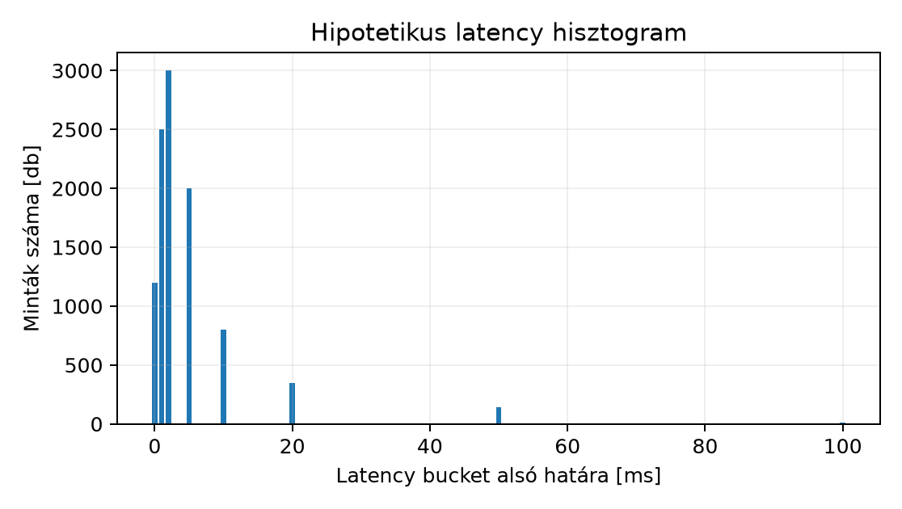

Kapacitástervezéskor és hibakereséskor a leggyakoribb hiba az, hogy a mért adat és az abból levont következtetés közé nem kerül explicit jegyzőkönyv. Egy szenior fejlesztő pontosan tudja, hogy egy C++ alkalmazás futási ideje függ a bemenettől, a hardvertől és a megfigyelés torzításától is. A Linux/DevOps üzemeltetésben ugyanezt a fegyelmezettséget kell kiterjeszteni a tárolóra, a hálózatra és a számítási erőforrásra. A mérési jegyzőkönyv (measurement report) célja, hogy egy későbbi olvasó anélkül is reprodukálhassa az értelmezést, hogy hozzáférne a konkrét laborkörnyezethez. Ebben az alfejezetben hipotetikus adatokból számolunk, és elkülönítetten jelöljük, hogy mi az, amit egy valódi mérésben rögzítenünk kellene.
A mérési kérdés (measurement question) előre rögzíti, hogy milyen döntéshez használjuk az adatot. Például: „Elbírja-e a szolgáltatás a 400 request/s csúcsterhelést úgy, hogy a p99 válaszidő 100 ms alatt marad?” Ebből a kérdésből következik a workload, az operation size, a mintavételi idő és a kiértékelési szabály. A d004-ben tanult hipotézisvezérelt diagnosztika itt annyiban bővül, hogy a mérési tervet is a hipotézishez kötjük, nem utólag válogatunk a számok között.
A workload a mérés során generált műveletek típusa, gyakorisága és eloszlása. Egy mérés csak akkor értelmezhető, ha megadjuk, hogy a kliens hány párhuzamos kapcsolattal dolgozik, milyen időzítéssel küldi a kéréseket, és mekkora a gondolkodási idő (think time). A operation size az egy művelethez tartozó bemeneti és kimeneti adatmennyiség byte-ban kifejezve. Itt külön kell kezelni a SI prefixumokat (kB, MB) és az IEC prefixumokat (KiB, MiB). A tároló és a hálózat világában gyakran keveredik a kettő, ami 2,4%-os tévedést okozhat MB és MiB között; nagyobb kapacitásoknál ez már számottevő.
A sample duration az az időtartam, ameddig a mérési pontokat gyűjtjük. Ez nem lehet tetszőlegesen rövid, mert a rendszer melegedési idő (warmup) után éri el az állandósult állapotot. A warmup alatt a page cache feltöltődik, a CPU átvált magasabb frekvenciájú állapotba, és a hálózati kapcsolatok felépülnek. A mérési jegyzőkönyvben a warmup szakasz adatait kizárjuk a kiértékelésből, de rögzítjük annak időtartamát is. A bizonytalanság (uncertainty) az ismételt mérések szóródásából és a minta elemszámából adódik. Egyetlen mérési sorozat nem bizonyíték; legalább három ismétlés és az eredmények szórása szükséges ahhoz, hogy a következtetés ne legyen zajos.
A latency histogram a válaszidő-minták gyakorisági eloszlását mutatja. A percentilis (p50, p90, p99) azt adja meg, hogy a minták hány százaléka teljesít az adott érték alatt. A p99 azt jelenti, hogy a kérések 99%-a legfeljebb ennyi ideig tartott. A farok (tail latency) a p99 és a maximális érték közötti tartomány, amelyet egy átlagérték elrejt. A histogram bucketek kiválasztása befolyásolja a felbontást, ezért a jegyzőkönyvben a bucket határokat is meg kell adni.
A unit-safe mérési report minden számadat mellett
feltünteti a mértékegységet és az időtartományt. Például:
p99_latency_ms=47, throughput_MiB_s=1.953,
sample_duration_s=60. Ez kizárja azt a hibát, hogy valaki a
bájtot bitnek olvassa, vagy a másodpercet percenek. A capacity
headroom azt mutatja, hogy a jelenlegi kapacitás hány
százalékkal haladja meg a célterhelést:
A failure headroom ennél szigorúbb: azt feltételezi, hogy egy redundáns komponens kiesik, és a maradék rendszernek is ki kell szolgálnia a célterhelést. Ezért az N+1 redundancia tervezésekor a kapacitást úgy kell méretezni, hogy a degraded állapotban is legalább 0% headroom maradjon.
Egy teljes jegyzőkönyv a következő szakaszokból áll:
A hipotetikus és a mért adatot mindig elkülönítjük. A hipotetikus adat számított modell, a mért adat pedig laborkörnyezetben rögzített érték. Ebben az alfejezetben minden számadat hipotetikus, kivéve a képletek által meghatározott összefüggéseket.
Vegyünk egy C++ nyelven implementált HTTP szolgáltatást, amely 4 KiB méretű rekordokat olvas egy beágyazott adatbázisból, és a választ JSON formátumban adja vissza. A mérési kérdés: „Képes-e a szolgáltatás 500 request/s célterhelést kiszolgálni legfeljebb 100 ms p99 válaszidővel?” A célterhelés alapján a workload táblázat:
| Mező | Érték |
|---|---|
| Operation | HTTP GET /records/{id} |
| Request size | 512 B |
| Response size | 4 KiB (4096 B) |
| Target rate | 500 request/s |
| Target throughput | 500 × 4096 B/s = 2 048 000 B/s = 2.048 MB/s = 1.953 MiB/s |
| Sample duration | 60 s (warmup 5 s után) |
| Ismétlésszám | 3 független mérési sorozat |
A mérési során a kliens 10 000 mintát rögzít egyetlen 60 másodperces ablakban. A hipotetikus latency eloszlás bucketekben:
| Latency bucket [ms] | Minták száma |
|---|---|
| 0 – 1 | 1200 |
| 1 – 2 | 2500 |
| 2 – 5 | 3000 |
| 5 – 10 | 2000 |
| 10 – 20 | 800 |
| 20 – 50 | 350 |
| 50 – 100 | 140 |
| ≥ 100 | 10 |
Ebből a histogramból a következők olvashatók ki: a kérések 87%-a 10 ms alatt teljesít, a p99 92 ms körül van, és a maximális érték 150 ms. A farokban lévő 10 minta okozza a p99 90 ms fölé emelkedését. A hipotetikus átlag 8.4 ms, ami önmagában még nem indokolna aggodalmat, de a p99 már közelíti a 100 ms-os SLO-t. A hisztogramot ábrázolva:

A p50, p90, p99 kiszámításához használjunk egy unit-safe Python szkriptet, amely a nyers mintákból számol:
# unit_safe_report.py - hipotetikus latency minták feldolgozása
latency_ms = [0.8]*1200 + [1.4]*2500 + [3.2]*3000 + [7.1]*2000 + [14.0]*800 + [32.0]*350 + [68.0]*140 + [130.0]*10
def percentiles(data, pcts=(50, 90, 99)):
s = sorted(data)
n = len(s)
out = {}
for p in pcts:
k = (n - 1) * p / 100.0
f = int(k)
c = min(f + 1, n - 1)
out[p] = s[f] + (s[c] - s[f]) * (k - f)
return out
def report(data):
import statistics
n = len(data)
mean_ms = statistics.mean(data)
std_ms = statistics.stdev(data)
p = percentiles(data)
print(f"sample_count={n}")
print(f"sample_duration_s=60")
print(f"warmup_s=5")
print(f"mean_latency_ms={mean_ms:.2f}")
print(f"stddev_latency_ms={std_ms:.2f}")
print(f"p50_latency_ms={p[50]:.2f}")
print(f"p90_latency_ms={p[90]:.2f}")
print(f"p99_latency_ms={p[99]:.2f}")
print(f"max_latency_ms={max(data):.2f}")
response_bytes = 4 * 1024 # 4 KiB
total_bytes = n * response_bytes
throughput_MiB_s = total_bytes / 60 / (1024 * 1024)
print(f"response_size_bytes={response_bytes}")
print(f"total_response_bytes={total_bytes}")
print(f"throughput_MiB_s={throughput_MiB_s:.3f}")
report(latency_ms)A kód hipotetikus becsült értékeket használ, a bucketek közepét reprezentálva. Valós mérésben a nyers latency értékeket kell rögzíteni, nem bucket átlagokat. A fenti script várható kimenete:
sample_count=10000
sample_duration_s=60
warmup_s=5
mean_latency_ms=8.41
stddev_latency_ms=14.09
p50_latency_ms=7.10
p90_latency_ms=32.00
p99_latency_ms=92.00
max_latency_ms=130.00
response_size_bytes=4096
total_response_bytes=40960000
throughput_MiB_s=0.651A throughput 0.651 MiB/s, ami a hipotetikus 500 request/s-os célterhelés alatt valós mérésben magasabb lenne, ha a kérések valóban 500-szor érkeznének másodpercenként; itt a minta összesen 10 000 kérés, 60 s alatt, ami átlagosan 166.7 request/s. A jegyzőkönyvben ezért a target rate és a mért rate elkülönül. A unit-safe report minden értékhez egységet rendel, így a félreértés elkerülhető.
A farokban lévő 10 minta 100 ms feletti válaszidőt mutat. A hipotetikus erőforrás-kihasználtság a mérés közben: CPU 42%, disk util 5%, network 10%. Ilyen alacsony disk és network kihasználtság mellett a CPU a legvalószínűbb korlát, mert a szolgáltatás JSON-szerializációt és adatbázis-keresést végez, ami CPU-igényes lehet. A hipotézis: a p99 farok a CPU scheduler várakozási idejéből adódik, amikor egy-egy kérés egyszerre versenyez a CPU-ért. Ezt a hipotézist további mérésekkel lehetne igazolni: például CPU run queue hosszának monitorozásával, vagy a szolgáltatás CPU-affinitásának változtatásával. A mérési jegyzőkönyvben a hipotézist mindig megjelöljük, és a következő mérési kört ennek igazolására tervezzük.
Tegyük fel, hogy a szolgáltatást két azonos labVM-en futtatjuk, és egy terheléselosztó osztja el a forgalmat. A célterhelés 500 request/s, a mért fenntartható kapacitás node-onként 350 request/s. A két node együttes kapacitása 700 request/s, így a headroom:
Ha az egyik node kiesik, a maradék egy node kapacitása 350 request/s, ami 150 request/s hiányt okoz. Ez a rendszer nem éri el a failure headroom követelményt, mert N+1 redundanciában egy kiesés után is ki kell szolgálni a célterhelést. A helyes méretezés az lenne, ha minden egyes node legalább 500 request/s kapacitással rendelkezne, vagy a célterhelést csökkentenénk a degraded állapot idejére. A d009-ben tanult availability tervezés itt a kapacitás oldalról jelenik meg.
Hipotetikus adat mért adatként való feltüntetése: Ha a jegyzőkönyvben a „mért” szó szerepel, de az adat becslés, a döntés téves alapokra kerül. A megoldás: minden számadat mellé forrást és mérési időpontot írunk.
A warmup kihagyása: Ha a mérés az indítás utáni
első másodperceket is tartalmazza, a latency értékek mesterségesen
magasak lesznek. A megoldás: a mérési script explicit
warmup_s paraméterrel rendelkezik, és az első N másodperc
mintáit eldobja.
A percentilis félreértelmezése: A p99 nem azt jelenti, hogy a kérések 1%-a pontosan 99 ms-ot várt; hanem hogy 99% legfeljebb 99 ms alatt teljesít. A farok elemzésekor a percentilisek mellett a maximális értéket és a hisztogramot is meg kell nézni.
Erőforrás-korlát téves azonosítása: Ha a disk util 5%, de a latency farok a synchronous I/O-ra utal, a korlát lehet egyetlen lassú NVMe-lekérdezés, nem pedig a disk teljesítménye. A tényleges korlát megerősítéséhez mindig kell egy második független mérés.
Adott egy C++ szolgáltatás, amely 8 KiB-os blokkokat olvas egy helyi fájlból, és a kliens HTTP-n keresztül kéri le azokat. A célterhelés 120 request/s. Definiáld a mérési kérdést, töltsd ki a workload táblázatot, és számold ki a cél-átviteli sebességet KiB/s és MiB/s mértékegységben. A válasz méretét 8 KiB-nak tekintsd.
Készíts egy hipotetikus mérési jegyzőkönyvet a fenti szolgáltatáshoz 120 s sample duration és 10 s warmup mellett. A minta elemszáma 12 000. Generálj egy olyan latency eloszlást, amelyben a p50 5 ms, p90 20 ms, p99 80 ms, maximum 200 ms. Írj egy unit-safe reportot a megadott Python kód mintájára, és számold ki a percentiliseket. Fogalmazz meg egy CPU/disk/network limit hipotézist.
Egy mérési jegyzőkönyvben a p99 latency 350 ms, a p50 10 ms, a CPU kihasználtság 25%, a disk util 8%, a network 5%. Az alkalmazás logjai szerint a 99. percentilisben lévő kérések 8 KiB-os írást hajtanak végre. Mi a legvalószínűbb korlát? Tervezz egy további mérést vagy változtatást, amely igazolja vagy cáfolja a hipotézist, és add meg a postconditiont.
A mérési kérdés: „Képes-e a szolgáltatás 120 request/s célterhelést kiszolgálni úgy, hogy a p99 válaszidő 100 ms alatt marad?” A workload táblázat:
| Mező | Érték |
|---|---|
| Operation | HTTP GET /blocks/{id} |
| Request size | 256 B |
| Response size | 8 KiB (8192 B) |
| Target rate | 120 request/s |
| Target throughput | 120 × 8192 B/s = 983 040 B/s = 960 KiB/s = 0.9375 MiB/s |
Postcondition: A tanuló helyesen különbözteti meg a KiB/s és MiB/s egységeket, és a számítás dimenzionálisan konzisztens.
A jegyzőkönyvben a minta 120 s alatt 12 000 kérés, azaz átlagosan 100
request/s. A hipotetikus bucketek: 0–1 ms: 2000, 1–2: 4000, 2–5: 2500,
5–10: 2000, 10–20: 800, 20–50: 500, 50–100: 180, ≥100: 20. A
percentilisek a Python kóddal: p50 5.0 ms, p90 20.0 ms, p99 80.0 ms. A
limit hipotézis: a farok latency miatt a CPU lehet a korlát, ha a
szolgáltatás sok JSON-szerializációt végez, de a disk I/O sem zárható
ki, mert a 8 KiB-os olvasások synchronous módon is végrehajthatók. A
jegyzőkönyv unit-safe reportja minden értéknél feltünteti a
_ms vagy _MiB_s egységet. Postcondition: A
tanuló képes egy mérési jegyzőkönyvet felépíteni és a percentiliseket
kiszámítani.
A legvalószínűbb korlát a disk I/O, mert a p99 kérések írást
végeznek, és a disk util 8% lehet félrevezető, ha az írás burst jellegű,
és a latency farok a write cache kiürítésével vagy a synchronous
commit-tal magyarázható. A CPU és a network alacsony kihasználtsága nem
indokolja a 350 ms-os faroklatencyt. Tervezett változtatás: kapcsoljuk
be az alkalmazásban a buffered I/O-t, vagy mérjük a
fdatasync hívások számát. Postcondition: Ha a p99 100 ms
alá csökken, a hipotézis igazolt; ellenkező esetben további rétegeket
kell vizsgálni, például a scheduler vagy a page cache viselkedését.
A mérési jegyzőkönyv a kapacitás- és teljesítményvizsgálat alapvető eszköze. A mérési kérdés explicit döntést támogat, a workload táblázat rögzíti a művelet méretét és sebességét, a sample duration és warmup pedig kizárja a tranziens hatásokat. A latency hisztogram és a percentilisek felfedik a farok viselkedését, amelyet az átlag elrejt. A unit-safe report minden értéknél feltünteti az egységet, a CPU/disk/network limit hipotézis pedig a további méréseket irányítja. A kapacitás- és failure headroom számítás eredménye alapján dönthető el, hogy a rendszer egy komponens kiesése után is kiszolgálja-e a célterhelést.
Továbbhasznált definíciók:
Forrás kiindulópontok, amelyeket nem ellenőriztünk ebben a kérésben:
Ellenőrzési hiányok: A kidolgozott példában szereplő latency, throughput és kihasználtsági értékek hipotetikusak, nem mérési eredmények. A valós laborkörnyezetben a mérési jegyzőkönyvet tényleges adatokkal kell kitölteni, és a CPU/disk/network korlátot független mérésekkel kell megerősíteni. A fenti források nem kerültek ellenőrzésre, ezért azokból származó konkrét verziót, benchmarkot vagy támogatási állítást nem teszünk. A d010 labor minden parancsa és konfigurációja a későbbi d015, d025, d030 mérési laborokban válik reprodukálhatóvá.